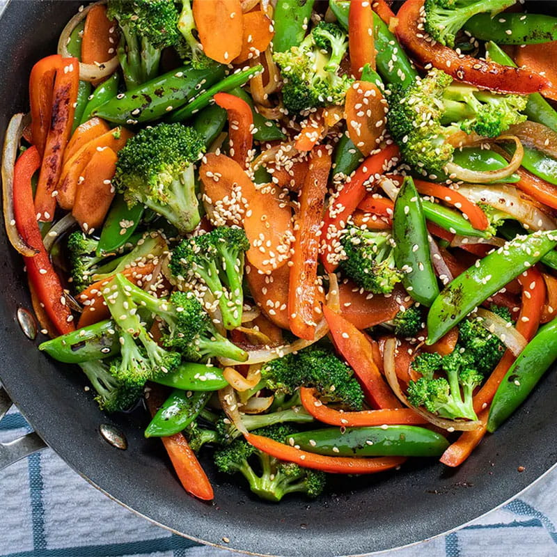

Vegetable Stir-Fry Recipe

Description
Vegetable Stir-Fry is the perfect quick and healthy meal. Packed with
colorful veggies like broccoli, bell peppers, and carrots, this dish is
not only vibrant but also incredibly nutritious. The sauce, made from soy
sauce, sesame oil, garlic, and ginger, adds a flavorful punch to the
crisp-tender vegetables. Whether you're a vegetarian or just looking to
incorporate more vegetables into your diet, this Vegetable Stir-Fry is a
versatile and satisfying option.
Ingredients:
- 2 cups broccoli florets
- 1 red bell pepper, sliced
- 1 yellow bell pepper, sliced
- 1 carrot, sliced
- 2 tbsp vegetable oil
- 2 tbsp soy sauce
- 1 tbsp sesame oil
- 2 cloves garlic, minced
- 1 inch ginger, minced
- Salt and pepper to taste
Steps:
- Preheat a wok or large pan over medium-high heat.
-
Add vegetable oil, then stir-fry broccoli, bell peppers, and carrots.
- In a small bowl, mix soy sauce, sesame oil, garlic, and ginger.
- Add the sauce to the vegetables.
- Stir-fry for an additional 5 minutes or until veggies are tender.
- Season with salt and pepper to taste.
- Serve hot.